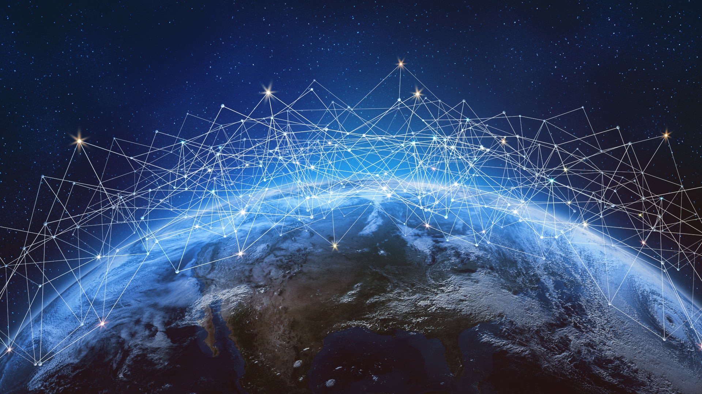
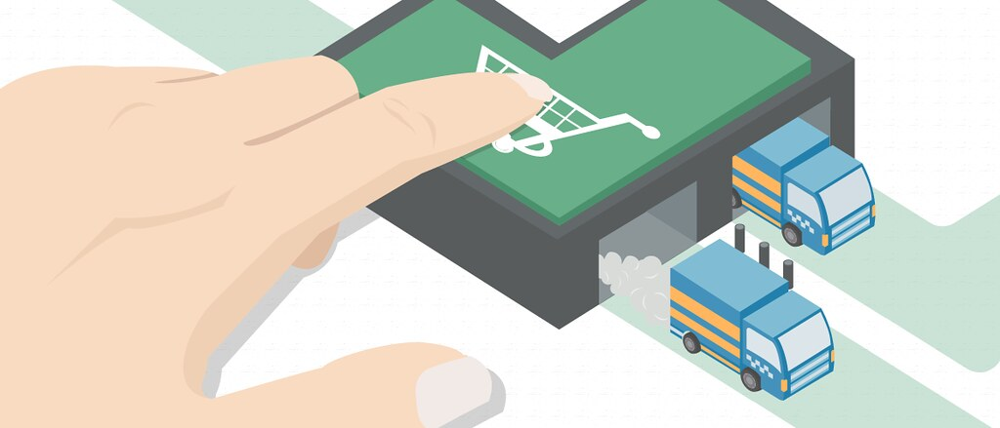
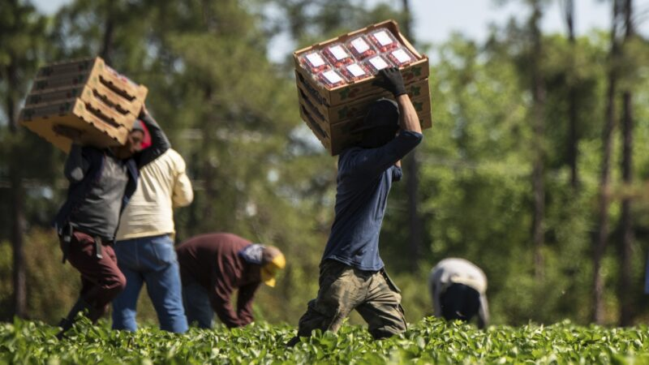

Hoje
Interação entre campo e cidade
A interação entre campo e cidade é essencial para o funcionamento da sociedade. O campo fornece alimentos e matérias-primas para as indústrias urbanas, enquanto a cidade oferece serviços, tecnologia e infraestrutura que beneficiam as áreas rurais. Essa relação é marcada por interdependência: o campo abastece a cidade com produtos agrícolas, e a cidade, por sua vez, disponibiliza mercados, educação e assistência médica para os moradores rurais2.
Historicamente, essa interação tem sido influenciada pelo êxodo rural, onde muitas pessoas deixam o campo em busca de oportunidades nas cidades. Isso pode gerar desafios como o crescimento desordenado dos centros urbanos e a necessidade de políticas que promovam o desenvolvimento sustentável em ambas as áreas.
Benefícios da Tecnologia
A tecnologia fortalece a conexão entre campo e cidade, otimizando a produção agrícola, melhorando a comercialização e agilizando a logística. Além disso, facilita o acesso à informação, educação e serviços essenciais, promovendo um desenvolvimento mais equilibrado e sustentável.

Internet e conectividade

E-commerce e logística

Agricultura de precisão
Recursos e Ferramentas
A tecnologia conecta campo e cidade ao otimizar a produção agrícola, facilitar a comercialização e melhorar a logística. Além disso, proporciona acesso à educação, saúde e serviços remotos, promovendo integração e desenvolvimento sustentável.
Descubra aplicativos, tutoriais e cursos para impulsionar o uso da tecnologia no campo.